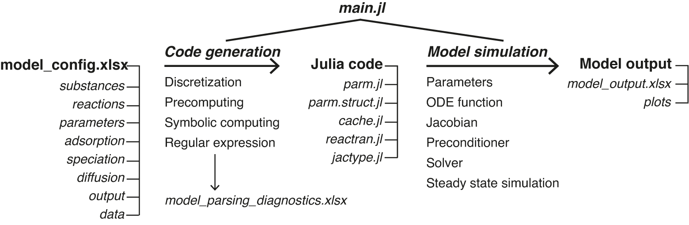

User Guide
In this page we briefly discuss how to use SedTrace to generate and run diagenetic models.
Workflow
The workflow is shown in the following figure. We will discuss each step in the sections below. 
Excel input
To generate code for the model user supplies an Excel file model_config.xlsx to SedTrace, including the following spreadsheets. The substances sheet lists the modelled substances, their types (e.g., solid or dissolved), chemical formula and boundary conditions. The reactions sheet lists the reactions, their chemical equations and rate expressions. The speciation sheet lists aqueous speciation reactions. The adsorption sheet lists the adsorbed species. The diffusion sheet lists information to compute the diffusion coefficients of dissolved substances. The parameters sheet lists the parameters required by the model. The output sheet is used to formulate output and plotting. The data sheet includes observational data that will be plotted together with model outputs. The speciation, adsorption and data sheets are optional and can be left empty if not needed (but their column headers must be preserved). Go to an example in /SedTrace/examples directory to see how to set up the configuration file.
Main.jl
This is the Julia script that you can use to generate code and run model simulations.
Code generation
First, configure the model input using modelconfig = ModelConfig(modeldirectory, modelfile, modelname), supplying information of the directory of the Excel input file, the name of the Excel file (e.g., model_config.SimpleFe.xlsx) and the model name (e.g., SimpleFe). Code generation is done by calling generate_code(modelconfig; ParamDict::Dictionary, EnableList::Dictionary).
SedTrace has many build-in tools to help you managing the Excel input during code generation.
Each of the spreadsheets in model_config.xlsx has a column :include. You can set this value of a row to 1 manually if you want to include this row when generating code. Left it empty if you do not want to include this row when generating the model. This is useful for model testing, such as when you are trying to test which reactions should be included in the model. The alternative way to choose which row in the spreadsheets should be include, but without modifying the Excel sheets, is to use the EnableList argument. Set EnableList = Dict("sheetname"=>["row1","row2",...]) will tell SedTrace to include row1, row2 etc. from the spreadsheet sheetname in the model.
Similarly, the ParamDict argument helps the user to change parameter values easily without modifying the parameters sheet. Set ParamDict = Dict("parameter_name"=>"parameter_value") will change the value of the parameter parameter_name from the value in the parameters sheet to parameter_value in ParamDict when generating code.
The idea is that once the Excel sheets are created the user should avoid modifying them, which is both inconvenient and potentially error-prone. Instead changes of the model information should be done using EnableList and ParamDict, which allows quick sensitive test and model prototyping.
Moreoever, sometimes it may be difficult to create the parameters sheet manually. Instead, the user can call generate_parameter_template(modelconfig;EnableList::Dictionary), which parses the substances, reactions, speciation and adsorption sheets in model_config.xlsx to identify which parameters are needed by the model. It will then output a template, saved in model_parameter_template.xlsx, to assist the creation of the parameters sheet. The user only need to enter the parameter values in the template, and copy-past the template to the parameters sheet in model_config.xlsx
During code generation, SedTrace collects the results of parsing the Excel input and creates a file model_parsing_diagnostics.xlsx, which can help the user to diagnose potential issues of code generation.
The code generated by SedTrace is assembled into 5 Julia scripts: parm.jl and parm.struct.jl containing the model parameters, cache.jl containing the model cache, reactran.jl containing the reactive-transport code, and jactype.jl containing the sparsity pattern of the Jacobian.
Model simulation
The Julia code generated by SedTrace needs to be loaded into the workspace module Main by calling IncludeFiles(modelconfig). The parameters are loaded into the module Param, and the cache and ODE function are loaded into the module Cache.
In the next step the users initializes the initial values, parameters, ODE function and Jacobian pattern. Internally SedTrace generates a set of initial values C0 = Param.C0 that are constant with respect to depth based on user supplied boundary conditions. The user can also supply their own initial values for example using the output from previous model runs. The parameters are initialized by parm = Param.ParamStruct(). The ODE function is initialized using OdeFun = Cache.init(C0, parm.Ngrid). The Jacobian sparsity pattern is initialized by JacPrototype = JacType(Param.IDdict), where IDdict is a Julia Dictionary that stores the indices of the model substances.
SedTrace also provides functions for code testing. Function TestJacobian(JacPrototype, OdeFun, parm) computes the Jacobian assuming it is dense, which is time consuming but accurate. The result is then compared with the Jacobian computed using JacPrototype. This thus serves as a check on code generation. BenchmarkJacobian(JacPrototype, OdeFun, parm), BenchmarkReactran(OdeFun, C0, parm), BenchmarkPreconditioner(JacPrototype, OdeFun, parm) are used to benchmark the performance and memory allocations of the Jacobian, ODE and preconditioner functions respectively.
The user configures the numerical solver using solverconfig = SolverConfig(:method, :preconditioner, prec_side), where :method is the numerical method such as :GMRES, :preconditioner is the name of the preconditioner, such as :ILU0, and prec_side controls whether it is left (1) or right (2) preconditioning. The numerical solution is configured using solutionconfig = SolutionConfig(C0, tspan, reltol, abstol; callback) to set the initial values (C0), the time span (tspan), and the tolerance (reltol for relative tolerance and abstol for absolute tolerance) for tests of numerical convergence. Any callback function compatible with the DifferentialEquations.jl can be supplied too. For example, the user can use callback = TerminateSteadyState(rtol, atol) from the DiffEqCallbacks.jl library to terminate the simulation once steady-state is reached given the relative and absolute tolerance levels of the derivatives (rtol and atol).
Model simulation is performed by calling solution = modelrun(OdeFun, parm, JacPrototype, solverconfig ,solutionconfig). Internally SedTrace creates the Jacobian, solver and preconditioner functions and format the ODE function to be compatible with DifferentialEquations.jl, which carries out the numerical solution.
Model output
Model outputs are created by calling generate_output(modelconfig, solution; site=[], showplt=true, saveplt=false). SedTrace will compute the output variables listed in the output sheet. New variables can be computed by supplying their mathematical expressions as functions of the model substances in the expression column. SedTrace also converts the default units to units specified by the user in the unit_profile column, using the conversion factors in the conversion_profile column. SedTrace can also computes the benthic fluxes of the output variables at the SWI. This is enables by set the flux_top column to 1. Similar to the model profiles, unit conversion for the flux is done using the conversion_flux and unit_flux columns.
SedTrace then plots the profiles and the fluxes of the output variables. The user can supply the measured sediment profiles of these variables in the data sheet and the fluxes in the flux_top_measured column in the output sheet. SedTrace will plot the data with the model output. To do so the user needs to specify the site name in the site column and supply this name to generate_output. The name of the substance and the unit in the data sheet must match exactly those in the output sheet for SedTrace to match the model results with measurements. Data at measured depth intervals are supplied to the depth and value columns, with optional error values that will be used to create error bars on the plots. SedTrace will save the output in model_output.xlsx, containing direct output of modelled substances (sheet Substances), reaction rates (ReacRates), saturation state (Omega), pH related species (pHspecies), speciation results (Speciation) and intermediate variables (IntermediateVar) in the default SedTrace units. The user specified output is inside the OutputProfile and OutputFlux sheets with the custom units. If saveplt = true SedTrace will save the plots in the plots directory inside modeldirectory.